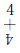
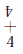

数字の方位学
数字の力学
時間性（通俗思考に依る歴史性）
速度と座標と速度


ｅｔｃ
人は静力学の現象しないことゝ同じくあることの永遠の仮設である、人は人の客観を捨てよ。
主観の体系の収斂と収斂に依る凹レンズ。
４ 第四世
４ 一千九百三十一年九月十二日生。
４ 陽子核としての陽子と陽子との聯想と選択。
原子構造としてのあらゆる運算の研究。
方位と構造式と質量としての数字の性状性質に依る解答と解答の分類。
数字を代数的であることにすることから数字を数字的であることにすることから数字を数字であることにすることから数字を数字であることにすることへ（１２３４５６７８９０の疾患の究明と詩的である情緒の棄場）
数字のあらゆる性状 数字のあらゆる性質 このことらに依る数字の語尾の活用に依る数字の消滅
算式は光と光よりも迅く逃げる人とに依り運算せらること。
人は星―天体―星のために犠牲を惜むことは無意味である、星と星との引力圏と引力圏との相殺に依る加速度函数の変化の調査を先づ作ること。
一九三一、九、一二